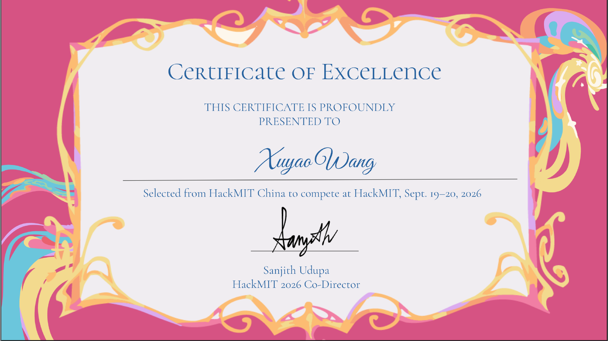
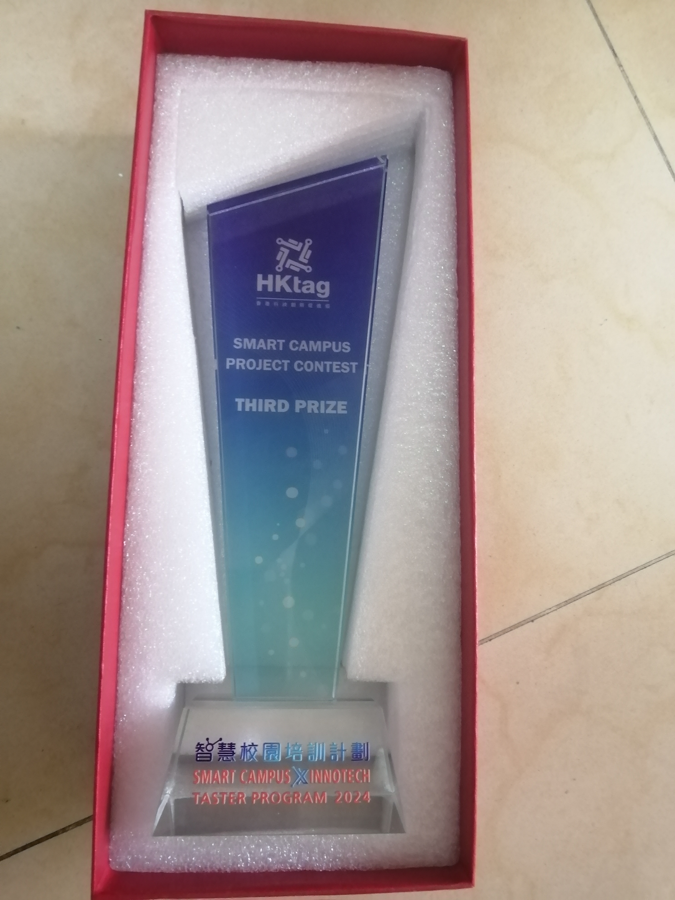
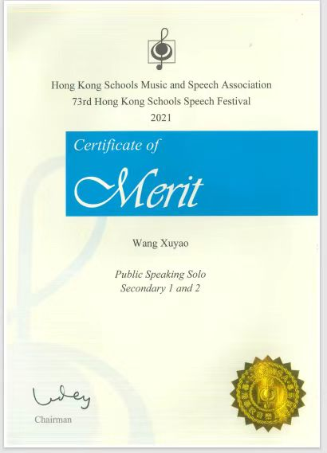
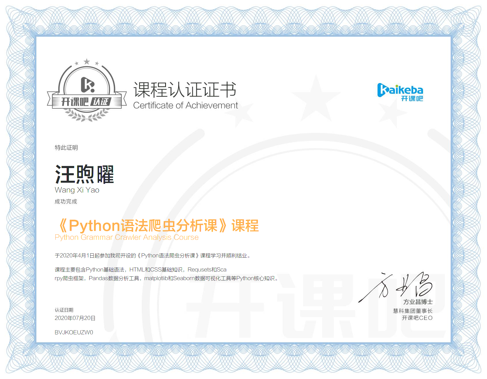

Key Achievements
HackMIT China 2026
Led the Education Track team and co-developed WashPal, a handwashing system for children that uses OpenCV and Raspberry Pi to assess technique and provide real-time feedback. The team placed first in the Education Track and third overall.


HackMIT 2026 Selection
Selected from HackMIT China to compete at HackMIT 2026 and received a Certificate of Excellence.

Maker Faire Exhibitions and Project Demonstrations
Exhibited GUIDE projects at Maker Faire Shenzhen and Maker Faire Tokyo, and demonstrated a smart medication reminder at the VI College International Maker Faire, explaining the projects and their practical uses to visitors.


Yale International Relations Camp Completion
Completed the Yale International Relations Camp in Hong Kong, organized by the Yale International Relations Association.

iCAN 2025
Received two International Special Awards at iCAN 2025: one from OCIP and one from the Eurobusiness & Haller Pro Inventio Foundation.
Hong Kong IOAI Team Member
Selected as one of four members of the Hong Kong team at the 2nd International Olympiad in Artificial Intelligence and received an Honourable Mention in the Individual Contest.

City University of Hong Kong GenAIoT Programme
Completed the GenAIoT Programme at City University of Hong Kong’s Department of Electrical Engineering, exploring generative AI, IoT, AIoT coding and smart-city applications.

Preface Nomad Awards 2024 Tech Competition
Received Second Runner-Up in the Preface Nomad Awards Tech Competition 2024.

Smart Campus Project Contest
Won third prize in the Smart Campus Project Contest at the Smart Campus x InnoTech Taster Program 2024.

Open Data Hackathon 2022 — Smart Property
Received the Best of Tech Award and Second Prize in the Secondary Stream of the Open Data Conference cum Hackathon Final 2022 for Smart Property.


Hong Kong Schools Speech Festival
Earned a Certificate of Merit and First Place in Dramatic Duologue at the 74th Hong Kong Schools Speech Festival, and a Certificate of Merit in Public Speaking Solo at the 73rd festival.


Programming, Robotics and Business Intelligence Course Certificates
Completed three certified courses: intelligent robot assembly and programming (Dec 8, 2021), Python grammar and web-scraping analysis (Jul 20, 2020), and competitive-capacity enhancement in business intelligence (Sep 30, 2020).

